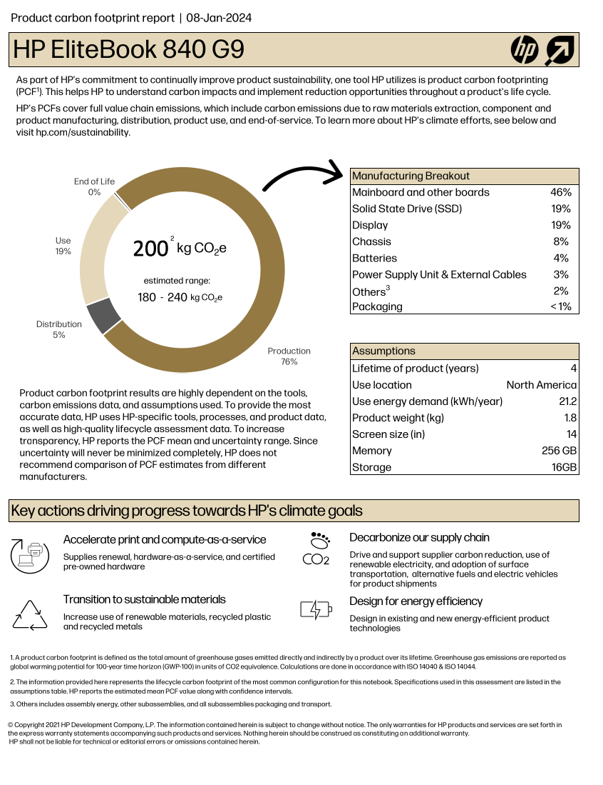
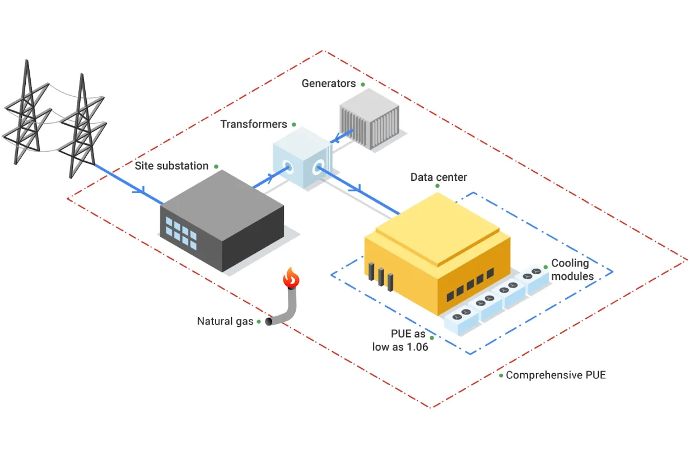
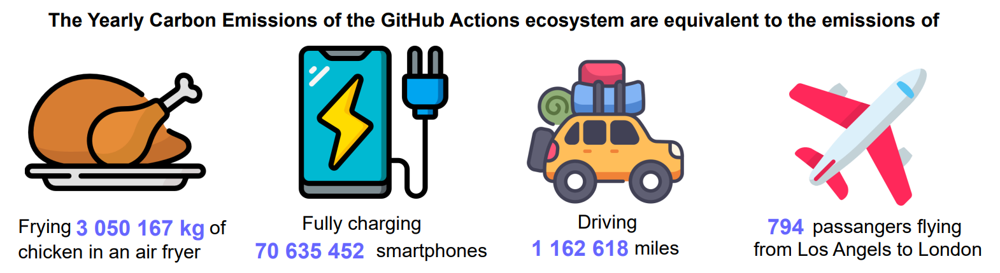

Digital research activities with sustainability issues
Last updated on 2026-03-24 | Edit this page
Overview
Questions
- What digital research activities can have sustainability issues?
- How do different types of data storage (local vs cloud) contribute to carbon emissions?
- What factors influence the energy and power consumption of digital research workflows?
Objectives
- Identify which aspects of a research workflow are most carbon‑intensive and why.
- Explain how different storage technologies (SSD, HDD, LTO tape) differ in embodied and operational carbon emissions.
Digital Research Infrastructure
Modern digital research depends on infrastructure ranging from individual computers and devices up to the globe spanning network of the internet. In this section we’ll look at some of the different components of digital infrastructure and their relation to carbon emissions.
Computers
Computers have become an indispensible component of modern life as well as digital research. These include everyday devices such as a laptop or desktop PC used to check email as well as servers accessed remotely.
Everyone in research uses a laptop, desktop PC or workstation to do their work, even if they are not involved in coding or running simulations. Browsing the web or checking the email are everyday activities that consume energy. These are all called operational carbon emissions.
But just the fact that you have one of these machines, also has a carbon impact. This is related to the process of sourcing the materials the computer is made off, manufacturing and transporting it. These are called embodied carbon emissions.
Both embodied and operational emissions play a significant role in the carbon footprint of computing devices, but how to estimate them and reduce them is very different.
Embodied emissions
Embodied carbon emissions do not change once the machine is in your hands: they only depend on the manufacturing and transport process. However, embodied carbon emissions per year are reduced the more years the machine is in use. Hence, the longer the lifetime of the machine, the lower their embodied carbon footprint per year.
Before replacing a computer, make sure that it is really needed and that it is no longer fit for purpose.
- Can you replace just some parts to extend its lifetime, eg. memory, GPUs?
- Can you give it another useful purpose?
- Can you donate it to charity (eg. see options in the Device Donation Scheme) to extend its useful life instead of trashing it (or recycling it)?
Finding the embodied carbon emissions of computers often relies on the information provided by the manufacturers themselves, which might be vague or based on different assumptions. However, it is a good starting point for estimating the carbon impact of your research activities.
Below there is a list of common laptop manufacturers’ webpages providing information on their product’s embodied carbon emissions. If your machine is custom made or very old, you might need to dig into the individual parts’s manufacturers, as well.
As a specific example, in this link you have the report corresponding to the laptop model used to write this bit of the course, an HP EliteBook 840 G9, also shown in the following image.

If we exclude the Use section of the chart, which
obviously depends on the usage and the location, as discussed in the previous episode, the remaining, related to
production and transportation, accounts for about ~80% of the estimated
total, i.e. 160 kgCO₂e.
It should be noted that different manufacturers use different criteria to calculate their embodied emissions, so choosing the computer with the lowest reported embodied emissions is not necessarily the best approach. Other aspects like the expected lifetime, the possibility of replacing individual components, etc. might be more useful and impactful aspects to look at.
What are the embodied carbon emissions of your computer?
Find the model of the computer you are using right now to do this course and try to find out its embodied carbon emissions. The links below from some manufacturers might be useful.
- Which part produces a larger carbon footprint?
- If it is a laptop and the battery is failing, how much carbon could you save if you just replace the battery for a new one instead of replacing the whole laptop?
Operational emissions
Operational emissions are those that are produced when using the equipment. They depend on its design and performance, but also on how it is used and where it is used. For the latter reason, it is often better to consider the energy usage, rather than the carbon emitted as this depends on the energy mix where the machine is being used.
Idle energy usage
These represent a baseline of energy usage just because of the computer (and the monitor in the case of desktop computers) being on. There are a number of factors that influence this:
- The age of the computer: Modern computers have generally more advanced technology that makes them more energy-efficient than older ones.
- Nature of the computer: Laptops, designed to work with batteries, are often also more energy efficient than desktops.
- The power management settings: That control when to go to sleep after a time of inactivity, switch the screen off, etc. have a very strong influence on the idle energy consumption.
- Peripherals: Especially, monitors (sometimes having two or more), but also printers can also consume large amounts of energy.
To figure out the idle energy consumption of a specific machine, one option is to check the ECO Declaration for the equipment. All manufacturers need to provide this document where, in principle, you can find such information. For example, the ECO declaration of the HP EliteBook 840 G9 indicates an energy consumption of 22.67 kWh/year. This declaration also includes useful information about the product, like which components can be replaced or upgrade, useful knowledge to reduce the embodied emissions, as pointed out above. Having said that, this document is sometimes not as complete as it should, or might not represent the exact configuration of your machine. Or might not even exist if the machine has been made bespoke with specific components.
In this case, the best option to get the idle energy usage of a machine is to use a plug in power meter. These plug in the mains socket and then the computer and any other peripherals, like monitors, can be plugged to it (possibly via a power strip). There are many models, but most will provide both the instantaneous power and the energy used over a period of time.
Once the baseline energy usage is found, strategies can be defined to reduce it, like adjusting the power management settings, changing usage habits, etc.
Application energy usage
Once you start doing any work with a computer it’s power usage will rise above its idle consumption. This is caused by components like the CPU, GPU or memory using more power to complete the computational work. There may also be increased power requirements to keep components cool.
Typically, you will be interested in the energy usage of specific applications, so you can minimize its energy usage. For example, a particular simulation software you have been working on or a 3D visualization tool.
This is not an easy task, and the solution depends greatly on your accessibility to the source code of the application, as well as the hardware you are using.
If you do have access to the source code, then you could use tools like the [Intel’s Performance Counter Monitor (PCM)] (which can be used in C++ programs) or Codecarbon (for Python programs). These tools require some setting up - and obviously modify your code - but will give you the most accurate readings of the energy usage specific for your application.
If you do not have access to the source code, then your only option is to rely on external tools to monitor the energy usage of the application (e.g. using PCM) or to calculate it based on the hardware being used and the time it is being used for using the Green Algorithms Calculator, for example.
It is beyond the scope of this course to teach you how to use any of these tools, given the range of use cases and configurations, but in the case studies described in the next episodes, there will be examples of how some of these can be employed in practice to understand your energy usage and consider ways of reducing them.
Storage Devices
Research datasets are increasingly large and replicated across multiple systems for reliability. As modern research practices move toward open data and long-term storage, the embodied and operational emissions of storage becomes a significant component of digital research’s environmental impact.
There are a few different storage mediums in common use:
- Solid-State Disk Drives (SSD): They use flash memory with no moving parts to store data. Their embodied carbon emissions are high due to the rare metals needed for semiconductor manufacturing, while operational emissions are somewhat lower than for spinning disks.
- Hard Disk Drives (HDD): They store data on spinning magnetic disks. Embodied emissions are lower than those of SSDs but operational emissions are higher because their disks must spin continuously.
- Linear Tape-Open (LTO Tape): Magnetic tape technology used for long-term storage. Their embodied emissions are low, while their operational emissions are near zero.
Similarly to computers, their associated carbon emissions can be split into operational and embedded components. These are summarised below:
| Category | SSD | HDD | LTO tape |
|---|---|---|---|
| Embodied Carbon | High (16-32 kg)1 | Moderate (2-4 kg)1 | Low (~0.07 kg)3 |
| Operational Carbon | Low (2-5 kg)1 | Moderate - High (2-16 kg)1,2 | Low (~0 kg) |
| Lifespan | 5–10 years | 5-10 years | 30+ years |
* Emissions are in kgCO₂e per TB per year
While the numbers vary depending on manufacturers and reporting
available, it is generally considered that SSDs have a higher ’carbon
debtper unit of storage than HDDs^4^. However, recent data suggests that the difference for enterprise-grade drives is shrinking, and new SSDs have only 2x the embodied carbon of comparable HDDs^5^. While the numbers vary depending on manufacturers and reporting available, it is generally considered that SSDs have a higher 'carbon debt
per unit of storage than HDDs4. However, recent data suggests
that the difference for enterprise-grade drives is shrinking, and new
SSDs have only 2x the embodied carbon of comparable
HDDs5.
SSDs allow data to be accessed almost instantly and are typically 10–100× faster than HDDs. LTO tapes offer the slowest access speeds, but they remain the preferred option for storing cold data due to their low cost, low embodied emissions and great energy efficiency.
Data Centres
Beyond personal computing devices like laptops and PC’s, much computing infrastructure is now accessed remotely. In this case the computers are generally hosted in a Data Centre, a large industrial facility that can contain thousands of servers and the supporting infrastructure required to allow remote access.
The carbon emissions associated with the computers in a data centre are covered by the same considerations above. As purpose built facilities, data centres can host more specialised equipment and benefit from economies of scale. They also have additional emissions sources beyond the individual servers they house.
Data centre embodied emissions:
- data-centre construction: includes the concrete, steel, electrical infrastructure, etc.
- networking and supporting hardware: as the servers in a data centre are accessed remotely they must be serviced by network infrastructure such as switches and cables.
- cooling: the density of compute in data centres means they must have dedicated infrastructure for cooling.
There are additional sources of operational emissions as well:
- power for infrastructure: this includes the networking infrastructure, cooling systems, lighting, etc.
- power distribution overheads: data centers deal with large amounts of electrical and encounter overheads in its distribution and transformation.
The energy efficiency of data centres is usually measured as their Power Usage Effectiveness (PUE), and determines how much of the energy entering the data centre reaches the IT equipment used for servers and storage compared to the energy used for cooling and lighting.
\[ \mathbf{PUE} = \frac{\text{IT Equipment Power}}{\text{Total Facility Power}} \]

An average data centre has a PUE of around 1.59, meaning that for every 1 watt used to power computational resources, an additional 0.59 watts is spent on cooling and power distribution. Newer and larger data centres tend to be more efficient11, with a global average PUE of 1.41 in 202511.
Data centres consume around 2.5% of the UK’s electricity and the annual consumption is expected to increase by 4 times by 20309. In the U.S., data centres are predicted to use up to 12% of the country’s electricity by 2028, a 3x increase from 4.4% in 20258.
The operational emissions of data centers depends heavily on the grid carbon intensity, with lower emissions in renewable-powered regions and higher emissions in fossil-fuel-dominated regions.
Despite the additional emissions sources, data centres have the ability to be far more energy efficient than the equivalent collection individual computers or storage devices. This is due to their scale and specialisation and the provision of infrastructure that can be shared between many users.
| Category | Data Center | Local Equipment |
|---|---|---|
| Embodied Carbon | Lower (shared + efficient infrastructure) | Higher (duplication + under‑used hardware) |
| Operational Carbon | Usually lower (efficient cooling) | Usually higher (older facilities + local grid) |
| Energy Efficiency | High (fewer idle disks) | Generally lower |
| Utilisation | High (resources shared across many users) | Lower (over‑provisioning) |
Data Centres and The Cloud
The “cloud” is the delivery model for computing services over the internet. Cloud services are implemented and run on physical data centres owned and operated by cloud providers. Because cloud providers benefit from the advantages of data centre hosting, cloud deployments are often more energy and carbon efficient than many small scale on‑premise setups - but the cloud’s actual footprint still depends on the provider’s hardware, PUE, electricity grid mix and redundancy/replication practices.
Research Activities
Simulation, Modelling and Data Analysis
The primary infrastructure required to carry out these activities is access to computation. This can be provided by a laptop, desktop or a server hosted in a data centre.
Factors to consider:
- Embodied and operational emissions are both key contributors. Optimally, a given amount of compute should be provided by the minimum associated embodied emissions. It’s therefore key to maximise utilisation of hardware rather than investing in more. This strongly promotes using computational computational services based on shared infrastructure (such as cloud or high performance computing facilities) where utilisation can be kept high and operational emissions are greatly reduced compared to individual desktops or laptops.
- Computational Architectures have become increasingly diverse in recent years both for CPUs and for accelerators (e.g. GPUs). Computational problems can have very different electricity comsumption depending on the architecture used so choosing the right one can be very impactful.
- Doing less computation is also worth considering. This can take the form of planning computational workloads carefully to minimise resource usage or limiting work carried out for speculative or exploratory purposes.
- Code optimisation is the art of minimising the computational resources required to solve a given problem. This can take various forms depending on programming language and computational architecture but impressive speed ups can be obtained in some cases compared with unoptimised code.
- Carbon awareness is making your use of digital resources responsive to changes in carbon intensity of electricity generation. This can take different forms, for example, moving use to locations which have lower carbon intensities, changing the time at which you consume electricity to periods with lower carbon intensities or even making your workload intensity responsive to carbon intensity forecasts to minimise operational emissions.
Research Data Management
Storing Data
Generally when presented with a choice between buying your own storage devices or using a storage service, it will be more sustainable to use the latter. That said, local storage has a number of advantages, including greater control over data, predictable access speeds, and the ability to power equipment down when not in use. Typically research organisations will provide dedicated storage services for research data.
Factors to consider (to be expanded):
- Delete unused or redundant data and avoid unnecessary replication.
- Keep frequently accessed data on faster storage (SSDs) and move “cold” or infrequently accessed data to slower but more energy efficient systems (tape storage)12.
- Use compression and efficient file formats to reduce storage requirements
- Consider cleaning and preprocessing data locally before storing.
- Choose storage options designed for infrequent access when appropiate.
Data Management Plans
The best time to think about how to manage you data is before you collect or generate it…
Use of Computational Services
Rather than directly using a computer, many digital research activities are provided by accessing services over the internet. Ultimately these services are provided by physical infrastructure however, as an end user, it can be very difficult to know how your activity corresponds to resource consumption. In these cases we usually have to depend on information from the service provider or make relative comparisons through proxy metrics.
It’s not possible to comprehensively cover the services used in modern digital research so below we’ve chosen a few examplars to look at in detail.
GitHub
In a research study on Environmental Impact of CI/CD Pipelines the authors estimates that the carbon footprint from GitHub Actions range from 150.5 MTCO₂e in the most optimistic scenario to 994.9 MTCO₂e in the most pessimistic scenario. The most likely scenario estimates are 456.9 MTCO₂e which is equivalent to the carbon captured by 7,615 urban trees in a year.
The study also compares the carbon emissions of GitHub Actions with the emissions of quotidian activities.

Generative AI
Increasingly, generative AI services are used to generate text, images and computer code with consequent diverse applications in digital research. Emissions associated with generative AI models can be split into two components:
- Training is carried out as a one-off process before you even interact with a model. These are all of the resources required to gather training data, design the architecture and parameterise model weights.
- Inference occurs whenever you interact with a model, typically by providing a prompt. This refers to the energy required to transmit your prompt, generate the response and transmit it back to you.
There are some important factors to bear in mind when interacting with LLMs that can drive emissions (to be expanded):
- Model size
- Query count
- Response token count
References
- Swamit Tannu and Prashant J. Nair. 2023. The Dirty Secret of SSDs: Embodied Carbon. SIGENERGY Energy Inform. Rev. 3, 3 (October 2023), 4–9
- Based on Seagate EXOS X18
- Based on LTO 9 - FUJIFILM. Sustainability Report 2020. 2020
- Rteil, N., Kenny, R., Andrews, D., & Kerwin, K. (2025). Understanding the carbon footprint of storage media: A critical review of embodied emissions in hard disk drives. International Journal of Environmental and Ecological Engineering, 19(11), 263–270
- How Do the Embodied Carbon Dioxide Equivalents of Flash Compare to HDDs?
- Digital Decarbonisation - CO₂e Data Calculator
- WholeGrain DIgital Report
- National Energy System Operator
- U.S. Department of Energy - 2024 Report on U.S. Data Center Energy Use
- Uptime Institute, Large data centres are mostly more efficient, analysis confirms, 7 February 2024
- IEA, Energy and AI, April 2025, p259
- Sustainable computing in science - EMBL-EBI
- Poster on Environmentally-aware use of GitHub Actions and the associated GitHub repository
- Blog post on Adopting a more rational use of Continuous Integration with GitHub Actions.